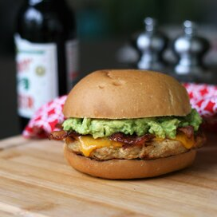

Chicken Burger

Delicious alternative to beef, these flavorful burgers made with ground chicken will keep you grilling from spring to fall. Top with a spicy cheese or BBQ sauce.
- 1 cup bread crumbs
- 1/4 cup minced onion
- 2 tablespoons grated Parmesan cheese
- 1/2 teaspoon ground paprika
- 1/2 teaspoon freshly ground black pepper
- 1/4 teaspoon cayenne pepper (Optional)
- 1 pound ground chicken
- 1 large egg
Directions
- Combine bread crumbs, onion, garlic, Parmesan cheese, salt, paprika, black pepper, and cayenne pepper in the bowl of a food processor; pulse until blended.
- Preheat an outdoor grill for medium heat and lightly oil the grate.
- Combine chicken, egg, and bread crumb mixture in a large bowl until evenly mixed. Divide into 4 equal parts and shape into patties. Place on a cookie sheet and cover with aluminum foil. Refrigerate for 5 to 10 minutes.
- Cook on the preheated grill until cooked through, at least 7 minutes per side. An instant-read thermometer inserted into the center of the burgers should read at least 165 degrees F (74 degrees C).
Cook Notes
You can use 1/2 teaspoon garlic powder for the fresh garlic and 1/2 teaspoon onion powder for the minced onion.
Note that this recipe can be altered using different spices such as curry, basil, habanero pepper, or rosemary.
Nutrition Facts
Per Serving: 268 calories; protein 32.6g; carbohydrates 21.5g; fat 4.9g; cholesterol 114.5mg; sodium 988mg.